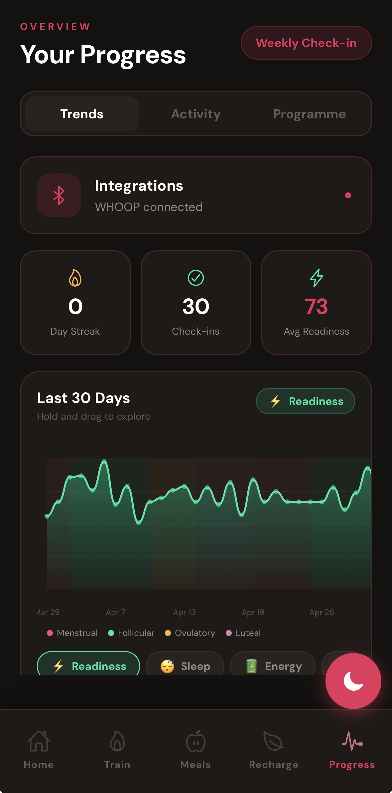

UX walkthrough
Inside the integration
How users see and interact with WHOOP data inside Attune.

Progress dashboard — WHOOP connected
The Progress tab shows WHOOP connection status and a 30-day readiness trend chart overlaid with cycle phase bands (menstrual, follicular, ovulatory, luteal). Users can see how their WHOOP recovery correlates with their hormonal cycle.

Integrations modal — device management
Users manage their wearable connection from the Integrations screen. Only one device can be active at a time to ensure clean, conflict-free data. Tapping the Connected badge disconnects the device and revokes the OAuth token.
Privacy by design
WHOOP OAuth tokens are stored server-side in Supabase with row-level security — only the authenticated user can access their own tokens. Health data is never sold, shared with third parties, or used for advertising. It is used exclusively to personalise the user's training programme within Attune. Users can disconnect WHOOP at any time, which immediately revokes the OAuth token and removes all stored credentials.